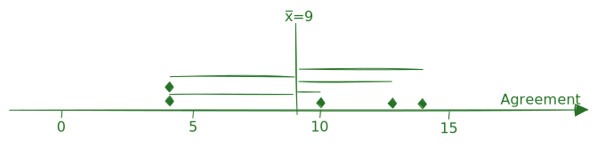

#| exercise: compute_mean
____(____)4 Univariate Deskriptivstatistik
4.1 Datensätze
In diesem Kapitel werden zwei Datensätze verwendet. Zum einen der Datensatz {palmerpenguins} un dzum anderen resimulierte Daten aus dem Environment Modul des International Social Survey Programme.
4.1.1 Palmer Penguins Datensatz
Der Palmer Penguins Datensatz Horst, Hill, & Gorman (2020) ist ein beliebtes Datenbeispiel in der -Community und wird oft als Alternative zum berühmten Iris-Datensatz verwendet. Der Datensatz enthält Informationen zu verschiedenen Pinguinarten in der Antarktis und wurde von Allison Horst und Alison Hill berühmt gemacht und illustriert. Der Datensatz ist besonders nützlich, um statistische Methoden zu demonstrieren und Datenvisualisierungen zu erstellen.
Der Palmer Penguins Datensatz umfasst folgende Variablen:
| Variable | Beschreibung |
|---|---|
| species | Die Art des Pinguins (z. B. Adelie , Chinstrap, Gentoo). |
| island | Die Insel, auf der der Pinguin gefunden wurde (z. B. Torgersen, Biscoe, Dream). |
| bill_length_mm | Die Länge des Schnabels des Pinguins in Millimetern. |
| bill_depth_mm | Die Tiefe des Schnabels des Pinguins in Millimetern. |
| flipper_length_mm | Die Länge der Flossen des Pinguins in Millimetern. |
| body_mass_g | Die Körpermasse des Pinguins in Gramm. |
| sex | Das Geschlecht des Pinguins (männlich oder weiblich). |


4.1.2 ISSP Environment Modul
Die (ISSP Research Group, 2024) hat den Environment Modul 1993, 2000, 2010, 2020 jeweils mit repräsentativen Stichproben in mehreren Ländern durchgeführt - es handelt sich also um eine Trendstudie (Döring & Bortz, 2016). Der Datensatz enthält Informationen zu Einstellungen und Verhaltensweisen im Zusammenhang mit Umweltfragen. Einige der Variablen im Datensatz vorkommen sind:
| Variable name | Variable label |
|---|---|
| v1 | abcd: Solve economic problems: private enterprise |
| v2 | abcd: Responsibility of government: reduce income differences |
| v3 | cd: Most important issue for [R’s COUNTRY] today? |
| v4 | cd: Next most important issue for [R’s COUNTRY] today? |
| v5 | cd: Most important environmental problem for [R’s COUNTRY] as a whole? |
| v6 | abcd: Highest priority in [R’s COUNTRY]? |
| v7 | abcd: Next highest priority in [R’s COUNTRY]? |
| v8 | cd: Amount of trust in most people |
| v9 | abc: Believe too often in science |
| v10 | abc: Science: more harm than good |
| v11 | abcd: Science: solve enviromental problems |
| v12 | abcd: Worry too much about environment and not enough about prices and jobs |
| v13 | abcd: Modern life harms environment |
| v14 | abcd: Worry too much about progress harming environment |
| v15 | abcd: [R’s COUNTRY] needs economic growth to protect environment |
| v16 | ab: Animals: medical testing if save lifes |
| v17 | abcd: Economic growth harms environment |
| v18 | bc: Earth cannot continue to support population growth at its present rate |
| v19 | ab: Nature is sacred because… |
| v20 | abcd: Protect environment: pay much higher prices |
| v21 | abcd: Protect environment: pay much higher taxes |
| v22 | abcd: Protect environment: cut your standard of living |
| v23 | abcd: Too difficult to do much about environment |
| v24 | abcd: I do what is right, even when it costs more money and time |
| v25 | bcd: There are more important things than protect environment |
| v26 | bcd: No point unless others do the same |
| v27 | bcd: Many claims about environment exaggerated |
| v28 | cd: Hard to know whether the way I live is helpful or harmful to the environment |
| v29 | ab: Antibiotics kill bacteria not viruses |
| v30 | ab : Humans beeing developed from animals |
| v31 | ab: Man-made chemicals can cause cancer |
| v32 | ab: Exposed radioactivity results to die |
| v33 | abc: Climate change is caused by a hole in atmosphere |
| v34 | abc: Climate change by use of coal or oil or gas |
| v35 | cd: Environmental problems have direct effect on everyday life |
| v36 | abcd: Air pollution caused by cars is (dangerous/ not dangerous) for environment |
| v37 | ab : Air pollution caused by cars is (dangerous/ not dangerous) for you and your family |
| v38 | abcd: Nuclear power stations are (dangerous/ not dangerous) for environment |
| v39 | abcd: Air pollution caused by industry is (dangerous/ not dangerous) for environment |
| v40 | abcd: Pesticides used in farming are (dangerous/ not dangerous) for environment |
| v41 | abcd: Pollution of rivers is (dangerous/ not dangerous) for environment |
| v42 | abcd: A rise in world’s temperature is (dangerous/ not dangerous) for environment |
| v43 | bcd: Modifying genes of certain crops is (dangerous/ not dangerous) for environment |
| v44 | abc: Government or ordinary people: decide themselves how to protect environment |
| v45 | abc: Government or business: decide themselves how to protect environment |
| v46 | bc: To protect environment - this country is doing |
| v47 | bc: International agreements for environmental problems should be made |
| v48 | bc: Poorer countries should be expected to make less effort |
| v49 | bc: Economic progress in [COUNTRY] will slow down |
| v50 | cd: Best way: getting business and industry to protect environment |
| v51 | cd: Best way: getting people and their families to protect environment |
| v52 | cd: Avoid buying certain products for environmental reasons |
| v53 | abcd: How often effort to sort glass and so on for recycling? |
| v54 | ac: Effort to buy fruit and vegetables without pesticides or chemicals |
| v55 | abc: Cut back on driving a car for environmental reasons |
| v56 | abcd: Member of a group to preserve environment? |
| v57 | abcd: Last five years: signed a petition? |
| v58 | abcd: Last five years: given money to an environmental group? |
| v59 | abcd: Last five years: taken part in protest demonstration? |
| v60 | ab: Expressing what you believe about God |
Eine detailierte Beschreibung kann dem Codebook entnommen werden
4.2 Maße der zentralen Tendenz
Maße der zentralen Tendenz geben Auskunft über den typischen Wert einer Verteilung. Die drei wichtigsten Maße sind:
Das arithmetische Mittel ist ein Maß der zentralen Tendenz von intervallskalierten Variablen. Wenn \(X = \{x_1, x_2, ..., x_n\}\) eine empirische Variable (= Datenreihe darstellt) ist das arithmetische Mittel \(\bar x\) als »Durchschnitt« definiert: \[ \bar{x}=\frac{1}{n} \sum_{i=1}^{n} x_{i} \]
In R kann das arithmetische Mittel mit der Funktion mean() berechnet werden. Berechnen Sie im folgenden Codefenster das arithmetische Mittel der Zahlen 1 bis 5.
Einen Vector mit den Zahlen 1 bis 5 können Sie in R mit der Funktion c(1, 2, 3, 4, 5) erstellen. Die Funktion mean() berechnet das arithmetische Mittel eines Vectors.
Der Median ist ein Maß der zentrale Tendenz von nominalen, ordinalen und intervallskalierten Variablen. Man erhält ihn, indem man alle Datenpunkte der Größe nach ordnet und dann den Wert in der Mitte nimmt. Ist die Anzahl der Datenpunkte eine gerade Zahl, entspricht der Median dem arithm. Mittel der beiden mittleren Werte. \[\widetilde{x}= \begin{cases} x_{m+1} & \text{für ungerades }n = 2m + 1 \\ \frac{1}{2}(x_m + x_{m+1}) & \text{für gerades }n = 2m \\ \end{cases} \]
Der Modus ist ein Maß der zentrale Tendenz von nominalen, ordinalen und intervallskalierten Variablen. Er entspricht dem am häufigsten vorkommenden Wert in einer Verteilung.
4.2.1 Übungen
4.2.1.1 Aufgabe Median berechnen I
Gegeben sei die ordinale Variable mit folgenden Ausprägungen: Y = (47, 42, 20, 89, 69, 7, 71).
Welchen Wert hat der Median von Y?
Gegeben sei die ordinale Variable mit folgenden Ausprägungen: Y = (47, 42, 20, 89, 69, 7, 71).
Welchen Wert hat der Median von Y?
Gegeben sei die ordinale Variable mit folgenden Ausprägungen: Y = (47, 42, 20, 89, 69, 7, 71).
Welchen Wert hat der Median von Y?
Gegeben sei die ordinale Variable mit folgenden Ausprägungen: Y = (47, 42, 20, 89, 69, 7, 71).
Welchen Wert hat der Median von Y?
Gegeben sei die ordinale Variable mit folgenden Ausprägungen: Y = (47, 42, 20, 89, 69, 7, 71).
Welchen Wert hat der Median von Y?
Gegeben sei die ordinale Variable mit folgenden Ausprägungen: Y = (47, 42, 20, 89, 69, 7, 71).
Welchen Wert hat der Median von Y?
Gegeben sei die ordinale Variable mit folgenden Ausprägungen: Y = (47, 42, 20, 89, 69, 7, 71).
Welchen Wert hat der Median von Y?
Gegeben sei die ordinale Variable mit folgenden Ausprägungen: Y = (47, 42, 20, 89, 69, 7, 71).
Welchen Wert hat der Median von Y?
Gegeben sei die ordinale Variable mit folgenden Ausprägungen: Y = (47, 42, 20, 89, 69, 7, 71).
Welchen Wert hat der Median von Y?
Gegeben sei die ordinale Variable mit folgenden Ausprägungen: Y = (47, 42, 20, 89, 69, 7, 71).
Welchen Wert hat der Median von Y?
Gegeben sei die ordinale Variable mit folgenden Ausprägungen: Y = (47, 42, 20, 89, 69, 7, 71).
Welchen Wert hat der Median von Y?
Gegeben sei die ordinale Variable mit folgenden Ausprägungen: Y = (47, 42, 20, 89, 69, 7, 71).
Welchen Wert hat der Median von Y?
Gegeben sei die ordinale Variable mit folgenden Ausprägungen: Y = (47, 42, 20, 89, 69, 7, 71).
Welchen Wert hat der Median von Y?
Gegeben sei die ordinale Variable mit folgenden Ausprägungen: Y = (47, 42, 20, 89, 69, 7, 71).
Welchen Wert hat der Median von Y?
Gegeben sei die ordinale Variable mit folgenden Ausprägungen: Y = (47, 42, 20, 89, 69, 7, 71).
Welchen Wert hat der Median von Y?
Gegeben sei die ordinale Variable mit folgenden Ausprägungen: Y = (47, 42, 20, 89, 69, 7, 71).
Welchen Wert hat der Median von Y?
Gegeben sei die ordinale Variable mit folgenden Ausprägungen: Y = (47, 42, 20, 89, 69, 7, 71).
Welchen Wert hat der Median von Y?
Gegeben sei die ordinale Variable mit folgenden Ausprägungen: Y = (47, 42, 20, 89, 69, 7, 71).
Welchen Wert hat der Median von Y?
Gegeben sei die ordinale Variable mit folgenden Ausprägungen: Y = (47, 42, 20, 89, 69, 7, 71).
Welchen Wert hat der Median von Y?
Gegeben sei die ordinale Variable mit folgenden Ausprägungen: Y = (47, 42, 20, 89, 69, 7, 71).
Welchen Wert hat der Median von Y?
4.2.1.2 Aufgabe Median berechnen II
Gegeben sei die ordinale Variable mit folgenden Ausprägungen: Y = (84, 98, 91, 63, 37, 100, 81).
Welchen Wert hat der Median von Y?
Gegeben sei die ordinale Variable mit folgenden Ausprägungen: Y = (84, 98, 91, 63, 37, 100, 81).
Welchen Wert hat der Median von Y?
Gegeben sei die ordinale Variable mit folgenden Ausprägungen: Y = (84, 98, 91, 63, 37, 100, 81).
Welchen Wert hat der Median von Y?
Gegeben sei die ordinale Variable mit folgenden Ausprägungen: Y = (84, 98, 91, 63, 37, 100, 81).
Welchen Wert hat der Median von Y?
Gegeben sei die ordinale Variable mit folgenden Ausprägungen: Y = (84, 98, 91, 63, 37, 100, 81).
Welchen Wert hat der Median von Y?
Gegeben sei die ordinale Variable mit folgenden Ausprägungen: Y = (84, 98, 91, 63, 37, 100, 81).
Welchen Wert hat der Median von Y?
Gegeben sei die ordinale Variable mit folgenden Ausprägungen: Y = (84, 98, 91, 63, 37, 100, 81).
Welchen Wert hat der Median von Y?
Gegeben sei die ordinale Variable mit folgenden Ausprägungen: Y = (84, 98, 91, 63, 37, 100, 81).
Welchen Wert hat der Median von Y?
Gegeben sei die ordinale Variable mit folgenden Ausprägungen: Y = (84, 98, 91, 63, 37, 100, 81).
Welchen Wert hat der Median von Y?
Gegeben sei die ordinale Variable mit folgenden Ausprägungen: Y = (84, 98, 91, 63, 37, 100, 81).
Welchen Wert hat der Median von Y?
Gegeben sei die ordinale Variable mit folgenden Ausprägungen: Y = (84, 98, 91, 63, 37, 100, 81).
Welchen Wert hat der Median von Y?
Gegeben sei die ordinale Variable mit folgenden Ausprägungen: Y = (84, 98, 91, 63, 37, 100, 81).
Welchen Wert hat der Median von Y?
Gegeben sei die ordinale Variable mit folgenden Ausprägungen: Y = (84, 98, 91, 63, 37, 100, 81).
Welchen Wert hat der Median von Y?
Gegeben sei die ordinale Variable mit folgenden Ausprägungen: Y = (84, 98, 91, 63, 37, 100, 81).
Welchen Wert hat der Median von Y?
Gegeben sei die ordinale Variable mit folgenden Ausprägungen: Y = (84, 98, 91, 63, 37, 100, 81).
Welchen Wert hat der Median von Y?
Gegeben sei die ordinale Variable mit folgenden Ausprägungen: Y = (84, 98, 91, 63, 37, 100, 81).
Welchen Wert hat der Median von Y?
Gegeben sei die ordinale Variable mit folgenden Ausprägungen: Y = (84, 98, 91, 63, 37, 100, 81).
Welchen Wert hat der Median von Y?
Gegeben sei die ordinale Variable mit folgenden Ausprägungen: Y = (84, 98, 91, 63, 37, 100, 81).
Welchen Wert hat der Median von Y?
Gegeben sei die ordinale Variable mit folgenden Ausprägungen: Y = (84, 98, 91, 63, 37, 100, 81).
Welchen Wert hat der Median von Y?
Gegeben sei die ordinale Variable mit folgenden Ausprägungen: Y = (84, 98, 91, 63, 37, 100, 81).
Welchen Wert hat der Median von Y?
Median_berechnen_ungerade_Anzahl
4.3 Maße der Dispersion (Streuung)
4.3.1 Mean Average Deviation
Die Mean Average Deviation (MAD) ist ein Streuungsmaß, das die durchschnittliche absolute Abweichung der Datenpunkte vom arithmetischen Mittel angibt. Für eine empirische Variable \(X = \{x_1, x_2, ..., x_n\}\) wird die MAD wie folgt berechnet: \[\text{MeanAD} = \frac{1}{n} \sum_{i=1}^{n} |x_i - \bar{x}|\] Die MeanAD kann in R mit der Funktion MeanAD() aus dem Paket DescTools berechnet werden.
HinweisBeispiel MeanAD
Eine Gruppe Forschender erfasst die Zustimmung zur Aussage »Modern science will solve our environmental problems with little change to our way of life.« auf einer Skala von 1 = Agree strongly bis 20 = Disagree strongly und erhält die Datenreihe \(x = 13, 4, 14, 4, 10\). Das arithmetische Mittel dieser Datenreihe ist \(\bar{x}= 9\). Die MeanAD wird wie folgt berechnet:
\[\text{MeanAD} = \frac{1}{5} (|13-9| + |4-9| + |14-9| + |4-9| + |10-9|) = \] \[= \frac{1}{5} (4 + 5 + 5 + 5 + 1) = \frac{20}{5} = 4\]

4.3.2 Varianz und Standardabweichung
Die Varianz ist ein Streuungsmaß, das die durchschnittliche quadrierte Abweichung der Datenpunkte vom arithmetischen Mittel angibt. Für eine empirische Variable \(X = \{x_1, x_2, ..., x_n\}\) wird die Varianz wie folgt berechnet: \[s^2 = \frac{1}{n-1} \sum_{i=1}^{n} (x_i - \bar{x})^2\] Die Standardabweichung ist die Quadratwurzel der Varianz und wird wie folgt berechnet: \[s = \sqrt{s^2}\] Die Varianz und Standardabweichung können in R mit den Funktionen var() und sd() berechnet werden.
HinweisBeispiel Varianz und Standardabweichung
Eine Gruppe Forschender erfasst die Zustimmung zur Aussage »Modern science will solve our environmental problems with little change to our way of life.« auf einer Skala von 1 = Agree strongly bis 20 = Disagree strongly und erhält die Datenreihe \(x = 13, 4, 14, 4, 10\). Das arithmetische Mittel dieser Datenreihe ist \(\bar{x}= 9\). Die Varianz wird wie folgt berechnet: \[s^2 = \frac{1}{5-1} ((13-9)^2 + (4-9)^2 + (14-9)^2 + (4-9)^2 + (10-9)^2) = \] \[= \frac{1}{4} (16 + 25 + 25 + 25 + 1) = \frac{92}{4} = 23\] Die Standardabweichung ist dann: \[s = \sqrt{23} \approx 4.8\]
4.3.3 Range, Quartile und Interquartilsbereich
Der Range, die Quartile \(Q_1\), \(Q_2\), \(Q_3\), sowie der Interquartilsbereich \(IQR\) wie folgt definiert:
\[Range = [min(x_i);\;max(x_i)]\]
\[\text{Quartil 1} = \text{Median aller } x_i ≤ \widetilde{x} \text{; } \text{Quartil 2} = \widetilde{x} \text{; } \text{Quartil 3} = \text{Median aller } x_i ≥ \widetilde{x} \text{; }\]
\[IQR = \left[\text{Quartil 1}; \text{Quartil 3} \right] \]
4.4 Modalität
Mit Modalität wird die »Vielgipflichkeit« einer Verteilung bezeichnet. Die Modi entsprechen oftmals in den Daten enthaltenen Subgruppen (Eid, Gollwitzer, & Schmitt, 2013).
4.5 Schiefe
Die Verteilung einer (unimodalen) intervallskalierten Variable ist schief, wenn die Streuungen der oberen/unteren Hälfte unterschiedlich sind (von Hippel, 2005).
4.6 Kurtosis
Die Kurtosis beschreibt die »Schmal- oder Breitgipfligkeit« einer (unimodalen) Verteilung.
4.7 Grafische Darstellung univariater Verteilungen
{kind=link}
4.7.1 Aufgaben
4.7.1.1 Aufgabe Mean aus Grafik schätzen
4.7.1.2 Aufgabe Mean Average Deviation aus Grafik schätzen
Döring, N., & Bortz, J. (2016). Forschungsmethoden und Evaluation in den Sozial- und Humanwissenschaften (5., vollst). Berlin, Heidelberg: Springer.
Eid, M., Gollwitzer, M., & Schmitt, M. (2013). Statistik Und Forschungsmethoden: Lehrbuch. Mit Online-Materialien (3. Aufl.). Beltz.
Gorman, K. B., Williams, T. D., & Fraser, W. R. (2014). Ecological sexual dimorphism and environmental variability within a community of Antarctic Penguins (Genus Pygoscelis). PLoS ONE, 9(3), e90081.
Horst, A. M., Hill, A. P., & Gorman, K. B. (2020). Palmerpenguins: Palmer Archipelago (Antarctica) Penguin Data. Manual.
ISSP Research Group. (2024). International Social Survey Programme: Environment I-IV CumulationInternational Social Survey Programme: Environment I-IV Cumulation. GESIS.
von Hippel, P. T. (2005). Mean, Median, and Skew: Correcting a Textbook Rule. Journal of Statistics Education, 13(2).